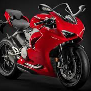
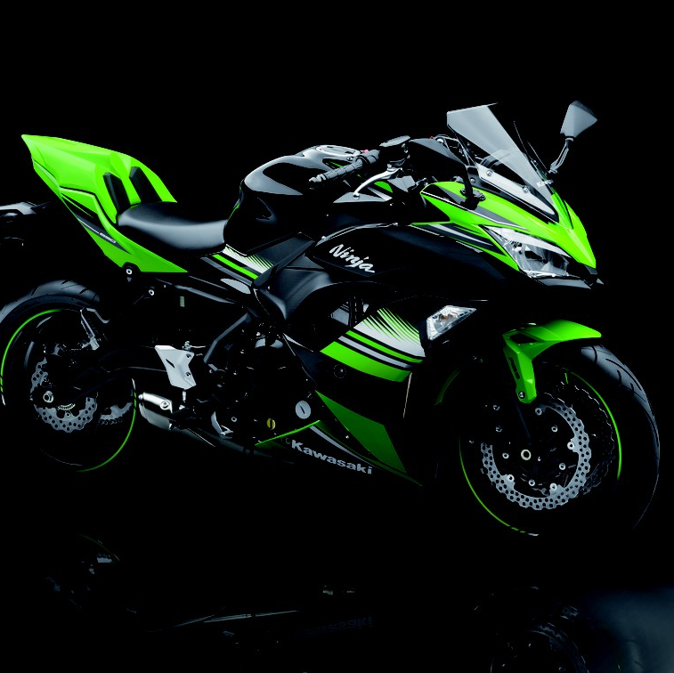
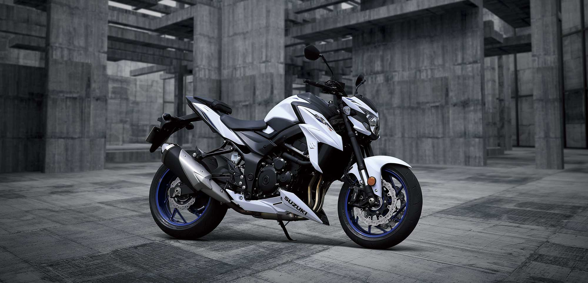

DUCATI
En 1925 fue fundada como una sociedad fabricante de aparatos de radio y radiotécnica en general. En 1935 se traslada la producción a Borgo Panigale (cerca de la anterior fábrica de Bolonia) donde se construye una nueva y moderna factoría y con ésta, Ducati comenzará a expandirse en el mercado internacional. Durante la Segunda Guerra Mundial la planta de Borgo Panigale fue bombardeada y destruida; se pudo salvar la maquinaria y se reconstruyó la fábrica.
KAWASAKI
Kawasaki Heavy Industries, Ltd. (川崎重工業株式会社 Kawasaki Jūkōgyō Kabushiki-gaisha?) (TYO: 7012) es una corporación internacional basada en Japón. Tiene su sede en dos ciudades, Chūō-ku (Kobe) y Minato (Tokio).
La compañía toma el nombre de su fundador, Shozo Kawasaki, y no tiene conexión con la ciudad de Kawasaki, (Kanagawa).
Fuera de Kōbe, Japón, Kawasaki se conoce principalmente por la producción de motocicletas y vehículos todoterreno, a pesar que la compañía y sus subsidiarias también fabrican motos de agua, barcos, plantas industriales, tractores, trenes, pequeños motores, y equipamiento aeroespacial (incluyendo aviones militares).
SUZUKI
Suzuki Motor Corporation (スズキ株式会社 Suzuki Kabushiki-Kaisha?), es una empresa japonesa dedicada a la fabricación de automóviles (especialmente todo-terrenos y compactos), motocicletas, motores fuera borda, y variedad de productos equipados con motores de combustión.Fue fundada en 1909 en la localidad de Hamamatsu, Japón, por Michio Suzuki.
En 2016 Suzuki fue el mayor fabricante de automóviles subcompactos a nivel mundial. Por segundo año consecutivo, fue la marca número uno en cuanto automóviles pequeños se refiere.
KTM

KTM Sportmotorcycle AG es un fabricante de motocicletas y escudería de motocicletas de Austria, que se formó en 1992, pero remonta su fundación a 1934. En 1992 la empresa fue escindida de su matriz KTM cuando tuvo problemas financieros. KTM se ha dividido en cuatro empresas, todas las cuales comparten la misma marca KTM, y en la actualidad tienen muchas más filiales con la misma marca. Sin embargo, KTM-Sportmotorcycle es más comúnmente asociado con la marca KTM.